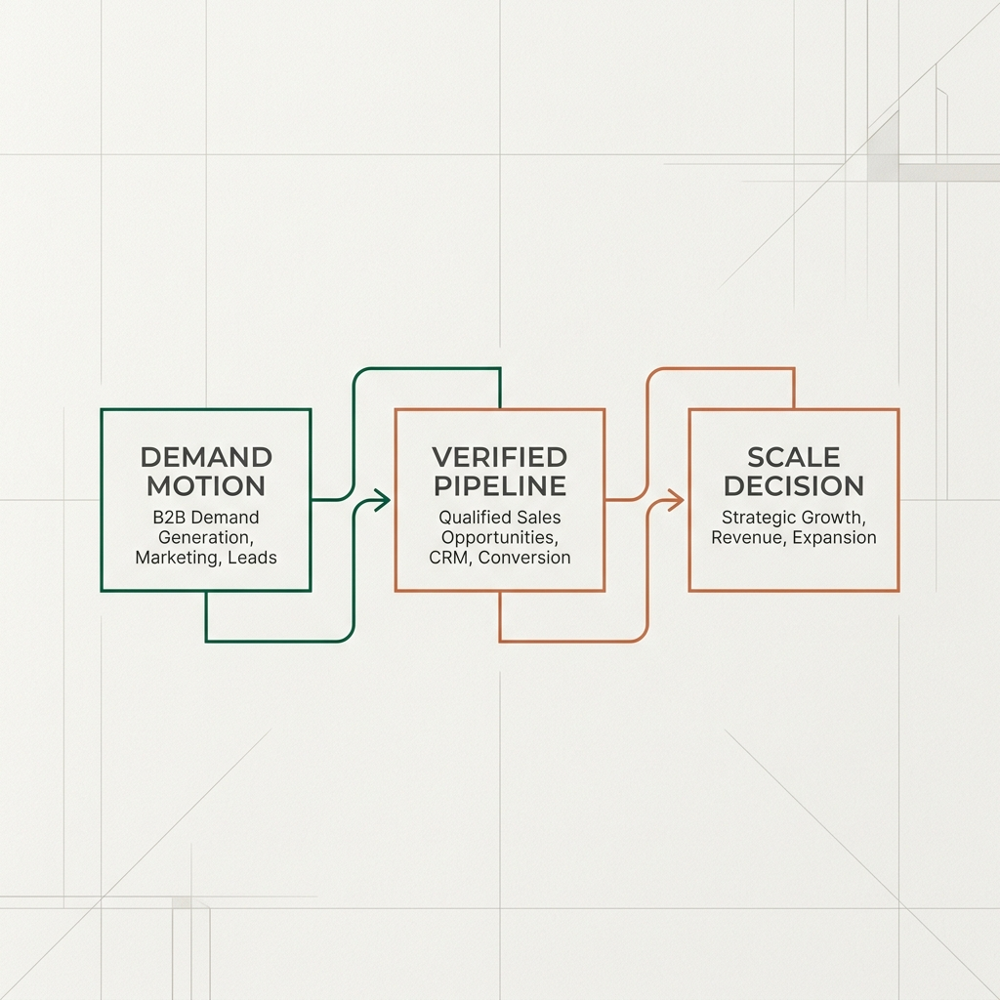

01
Increase Account Acquisition
We replace random lead volume with qualified, high-intent buyer accounts who meet your ideal customer profile (ICP).
We Build A Demand System That Gives You More Qualified B2B Buyers
Than You Can Handle, in 45 Days.

Verified Pipeline -> Scale Decision">Most B2B SaaS teams have paying customers and high daily activity. What they lack is a defensible, repeatable answer to which buyer, offer, and distribution channel creates predictable pipeline.
Every commercial expansion reduces to 3 fundamental levers. Kryssen's 45-Day Sprint optimizes all three simultaneously.
We replace random lead volume with qualified, high-intent buyer accounts who meet your ideal customer profile (ICP).
We re-engineer your core offer narrative so buyers evaluate your product on high-value business outcomes rather than feature price-wars.
We build automated qualification gates and nurture pathways that reduce sales cycle length and convert leads into active demos faster.
We do not sell monthly retainers or vague reports. Every stage of our sprint engineers a tangible, fully operational asset that stays with your team.
We audit your existing buyer data, positioning, and traffic channels to isolate the single highest-leverage commercial bottleneck.
Empirical baseline audit documenting exact constraint and target metrics.
We lock in the named ICP profile, core buyer problem, offer outcome narrative, channel motion, and objective proof event threshold.
Documented strategy locking in buyer, offer, channel, and proof criteria.
We build the conversion page, messaging angles, qualification routing, follow-up nurture sequence, and attribution tracking.
Operational conversion asset, qualification engine, and tracking instrumentation.
We deploy the live acquisition motion, monitor buyer response signals, measure lead quality, and execute one controlled optimization.
Verified commercial conversation data captured from active buyers.
We deliver an empirical Scale / Fix / Kill memo for leadership, giving your board and sales lead clear direction for future spend.
Formal Scale / Fix / Kill synthesis report and 90-day execution roadmap.
Because our work requires intense focus and shared risk, we only accept companies equipped to execute.
You have product proof and operational readiness to run a focused commercial test.
We are transparent when a team is not ready for a pipeline sprint.

No junior account managers. No outsourced freelancers. You deal directly with senior growth strategists.
Ade Oluwade leads commercial strategy, positioning, offer mechanics, revenue diagnostics, and leadership alignment.
Idorenyin directs market intelligence, conversion architecture, tracking instrumentation, analytics, and execution systems.
Together, Kryssen combines growth strategy, direct-response principles, and technical measurement without turning your company into an agency experiment.
The 45-day Pipeline Proof Engine is a complete senior-led commercial implementation for revenue-stage B2B SaaS companies.
Structured under the 50 / 30 / 20 Pipeline Proof Assurance model. Direct media and tool spend paid by your company.
Clear scope. Transparent expectations. No fine-print surprises.
We will evaluate whether a 45-day commercial sprint is justified for your company—or tell you clearly if you are not ready.
Prefer to start over email? Reach us at info@kryssengrowth.com.